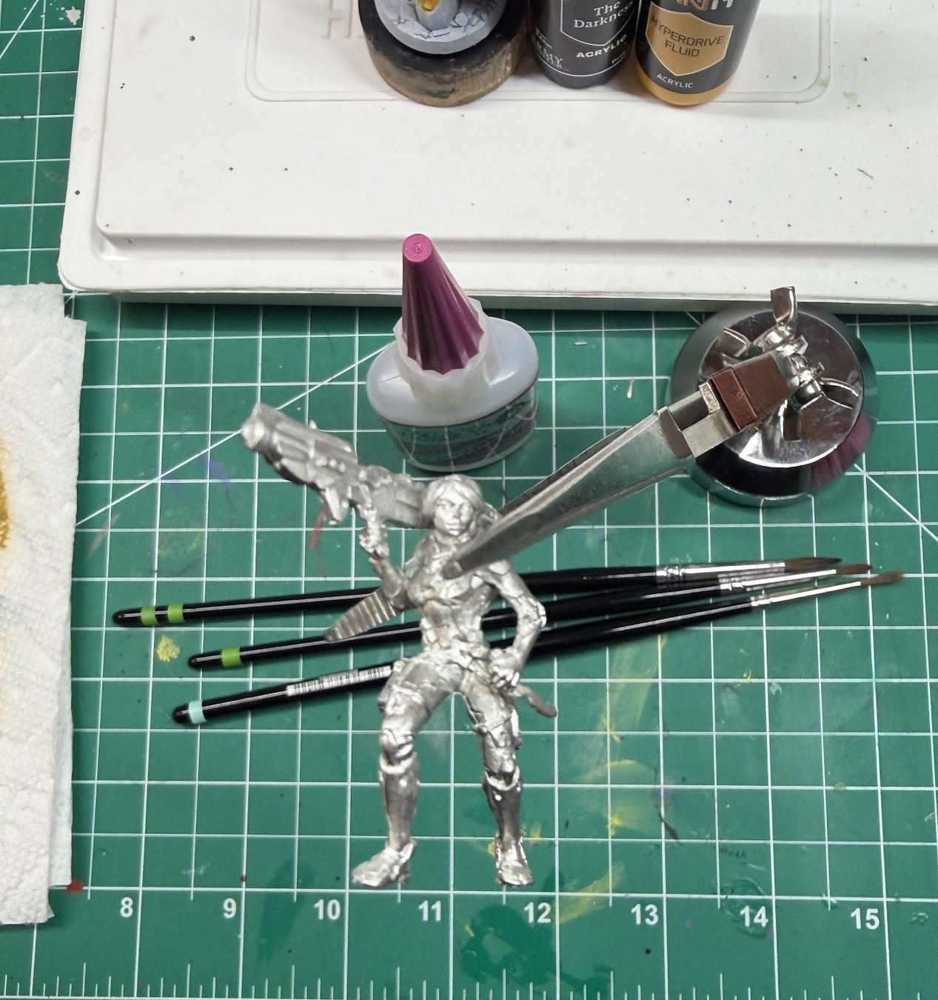
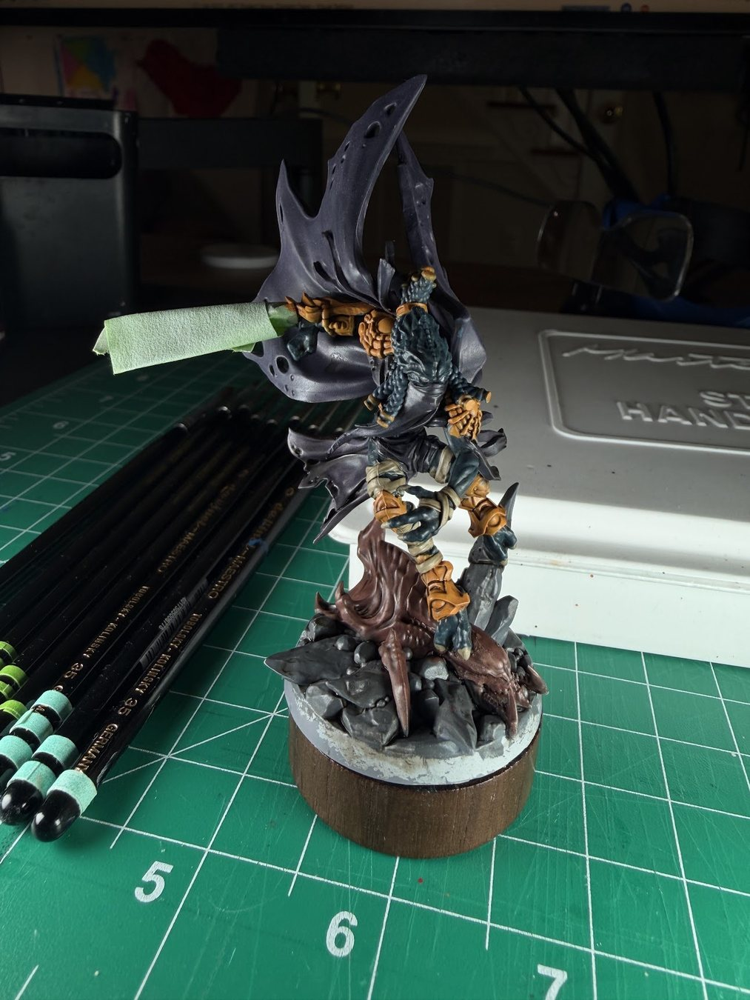

Brush racks, 3D-printed holders and numbered systems all look great in photos. The system I'd actually recommend is much less exciting: masking tape stripes around the brush handle.
Why this matters
Once you own more than three or four brushes, they start to look the same from the handle end, especially when they're standing bristles-up in a cup. You grab the wrong one, use your good detail brush for drybrushing, and it's never the same again. A good organization system should work while you're painting, at a glance, without thinking.
The short version
Wrap stripes of masking tape (or colored washi tape) around each handle. I do this all the time on my daily-driver brushes. Use the number or thickness of stripes for size, and the color of the tape for the brush's job. No app, no rack, no numbering scheme.
What mine look like
On my daily drivers, the stripes sit near the end of the handle, so I can read them even when the brushes are lying in a pile or standing in a cup. Different colors and different numbers of stripes tell them apart at a glance, and a couple of brushes get a band of tape up near the ferrule instead.

An example code
The exact code doesn't matter; pick whatever makes sense to you and stick with it. Here's one way to set it up.
Stripes for size
- One stripe: smallest detail brushes
- Two stripes: small and medium
- Three stripes: large and basecoat brushes
Color for job
- Blue: basecoating
- Green: layering and detail
- Red: metallics only (keeps metallic flakes out of your clean colors)
- Yellow: drybrushing
- Black: "retired" brushes that are rough enough to be texture, stippling or glue brushes
Why it works
- It's visible from any angle. Tape wraps all the way around the handle.
- It survives water and paint. Masking tape holds up surprisingly well, and it's easy to replace.
- It's cheap. A roll or two of tape.
- It handles brush "retirement." When a good brush loses its point, change its tape color and give it a second life.

Keep the good ones good
Organization only helps if the brushes survive. A few habits matter more than any holder:
- Don't dip past the ferrule (the metal part). Paint dries up inside it and splays the bristles.
- Rinse often while painting, and clean properly at the end with brush soap.
- Store brushes bristles-up or flat, never bristles-down in the water cup.
Checklist
- Masking or washi tape in a few colors
- Pick a size code (stripes) and a job code (color)
- Tape every brush
- Retired brushes get their own color
Next: a tidy desk is half the battle against a hobby slump.